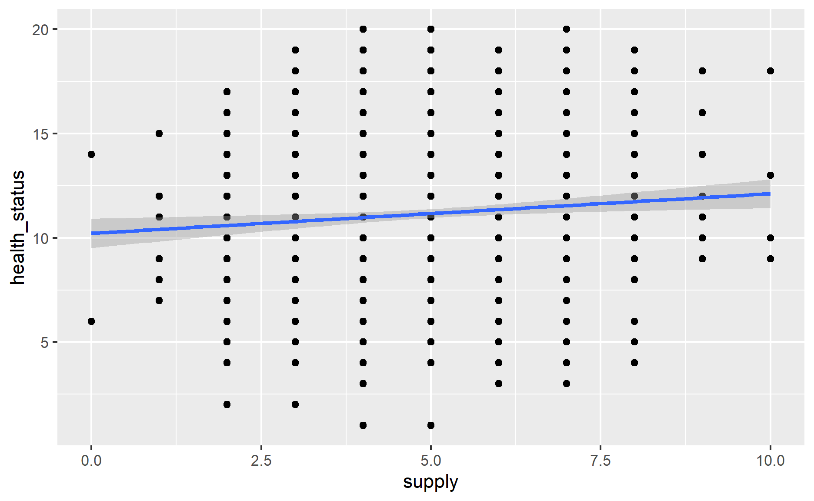
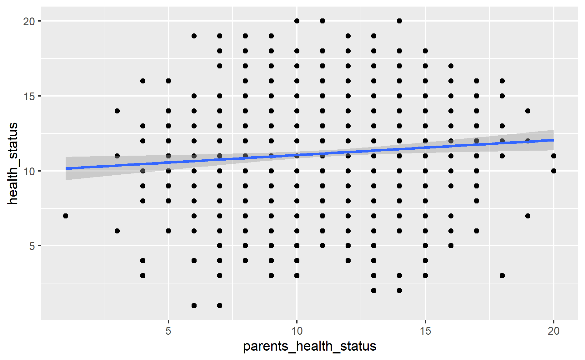
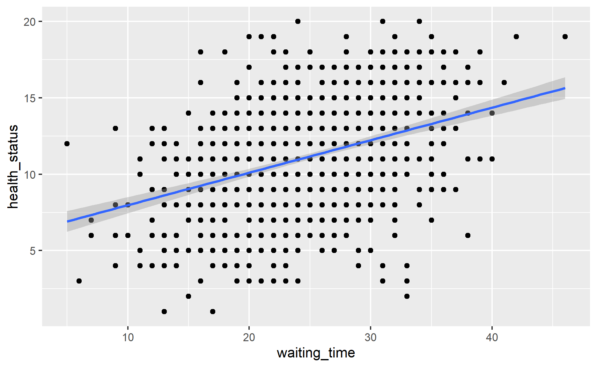

Finding a close enough variable
Photo by Johanna Vogt on Unsplash
In this post, I will continue my quest in acquiring causal inference knowledge.
I will be exploring instrumental variable.
Instrumental variable is one of the method in helping us isolating the front door so that we can estimate causal effect.
Below is how the author explained the instrumental variable (Bobbitt 2020):
An instrumental variable is a third variable introduced into regression analysis that is correlated with the predictor variable, but uncorrelated with the response variable.
I personally quite like how this author explained instrumental variable as well (Huntington-Klein 2023):
Instrumental variables are more like using a mold because instead of trying to strip away all the undesirable variation using controls, it finds a source of variation that allows you to isolate just the front-door path you are interested in.
(Bobbitt 2020) mentioned in his post that instrumental variable should only be used if it meets the following criteria:
It is highly correlated with the predictor variable.
It is not correlated with the response variable.
It is not correlated with the other variables that are left out of the model (e.g. proximity is not correlated with exercise, diet, or stress).
To use instrumental variable to estimate causal effect, we will perform a two-stage least square.
First, we use the instrumental variable to predict the treatment variable.
Then, we will use the predicted values of the treatment variable from first model to predict the outcome.
To use instrument variable, it would need to fulfill 3 criteria:
Relevance
Excludability
Exogeneity
In this post, I will be using the following packages to perform the analysis.
pacman::p_load(tidyverse, estimatr, broom, modelsummary, janitor)I will be using the fake policy dataset shared by Professor Andrew Heiss on his teaching website. I have also made reference to the materials and problem set he posted on the course website.
Refer to this link for the dataset.
In this analysis, we will attempt to measure how does public housing affect the health status.
We are given the omitted variable in the data. Therefore, I will first build a model by using public_housing and health_behavior variables to measure the causal effect.
model_forbidden <-
lm(health_status ~ public_housing + health_behavior
,data = housing)
tidy(model_forbidden)# A tibble: 3 × 5
term estimate std.error statistic p.value
<chr> <dbl> <dbl> <dbl> <dbl>
1 (Intercept) 0.555 0.0637 8.71 1.21e- 17
2 public_housing 0.229 0.00332 68.9 0
3 health_behavior 0.268 0.00791 33.9 1.62e-168As mentioned in the earlier section, often one of the challenges in performing causal inference is to remove the confounding effect.
The result could be misleading if we ignore the confounding effect.
Therefore, this is how the model result would look like if we just use public_housing in measuring the causal effect.
model_naive <-
lm(health_status ~ public_housing
,data = housing)
tidy(model_naive)# A tibble: 2 × 5
term estimate std.error statistic p.value
<chr> <dbl> <dbl> <dbl> <dbl>
1 (Intercept) 1.25 0.0885 14.2 1.09e-41
2 public_housing 0.322 0.00272 118. 0 As discussed in the earlier section, the instrument variable would need to fulfill 3 criteria:
Relevance
Excludability
Exogeneity
To check this, we could run a simple linear regression of the variable (i.e., public_housing in this context) and respective instrumental variables.
var_list <-
list("supply", "parents_health_status", "waiting_time")for(i in var_list){
print(i)
lm(public_housing ~ get(i)
,data = housing) %>%
summary() %>%
print()
}[1] "supply"
Call:
lm(formula = public_housing ~ get(i), data = housing)
Residuals:
Min 1Q Median 3Q Max
-30.753 -6.753 -0.024 6.976 29.976
Coefficients:
Estimate Std. Error t value Pr(>|t|)
(Intercept) 27.1075 1.0675 25.394 < 2e-16 ***
get(i) 0.7291 0.2020 3.609 0.000323 ***
---
Signif. codes: 0 '***' 0.001 '**' 0.01 '*' 0.05 '.' 0.1 ' ' 1
Residual standard error: 10.33 on 998 degrees of freedom
Multiple R-squared: 0.01288, Adjusted R-squared: 0.01189
F-statistic: 13.02 on 1 and 998 DF, p-value: 0.0003228
[1] "parents_health_status"
Call:
lm(formula = public_housing ~ get(i), data = housing)
Residuals:
Min 1Q Median 3Q Max
-29.6612 -6.9510 -0.1612 7.2593 30.6086
Coefficients:
Estimate Std. Error t value Pr(>|t|)
(Intercept) 27.7721 1.2885 21.55 <2e-16 ***
get(i) 0.2699 0.1120 2.41 0.0161 *
---
Signif. codes: 0 '***' 0.001 '**' 0.01 '*' 0.05 '.' 0.1 ' ' 1
Residual standard error: 10.37 on 998 degrees of freedom
Multiple R-squared: 0.005785, Adjusted R-squared: 0.004789
F-statistic: 5.807 on 1 and 998 DF, p-value: 0.01614
[1] "waiting_time"
Call:
lm(formula = public_housing ~ get(i), data = housing)
Residuals:
Min 1Q Median 3Q Max
-28.3606 -5.7683 0.1699 5.9475 24.9969
Coefficients:
Estimate Std. Error t value Pr(>|t|)
(Intercept) 6.99142 1.14096 6.128 1.28e-09 ***
get(i) 0.95058 0.04429 21.464 < 2e-16 ***
---
Signif. codes: 0 '***' 0.001 '**' 0.01 '*' 0.05 '.' 0.1 ' ' 1
Residual standard error: 8.601 on 998 degrees of freedom
Multiple R-squared: 0.3158, Adjusted R-squared: 0.3151
F-statistic: 460.7 on 1 and 998 DF, p-value: < 2.2e-16From the p-value of the results, it seems like variables supply and waiting_time are somewhat correlated with the public_housing.
Also, the F-statistics for both supply and waiting_time are also above 10, suggesting that these two variables pass the relevance test.
There is no statistical test available for excludability test.
We could plot out the chart between the outcome (i.e., health_status) and the respective variables.
for(i in var_list){
print(
ggplot(housing, aes(!!sym(i), health_status)) +
geom_point() +
geom_smooth(method = "lm")
)
}
It seems like waiting_time is more correlated with health_status as compared to other variables.
Nevertheless, this test also requires us to use domain knowledge to check whether the selected variable pass this test.
Again there is no statistical test available for exogeneity. Hence, we have to use to domain knowledge to determine whether the selected variable pass this test.
For simplicity, I will skip this in this analysis.
Once we have checked the instrument validity, we can start estimating the causal effect.
Over here, I will be using iv_robust function to estimate the causal effect.
This function allows us to perform a two-stage linear regression to estimate the causal effect.
model_iv_supply <-
iv_robust(health_status ~ public_housing | supply
,data = housing)
tidy(model_iv_supply) term estimate std.error statistic p.value
1 (Intercept) 3.1515039 0.92925507 3.391430 7.225586e-04
2 public_housing 0.2605848 0.03008957 8.660303 1.866986e-17
conf.low conf.high df outcome
1 1.3279859 4.9750218 998 health_status
2 0.2015387 0.3196308 998 health_statusWe also use glance function to extract the model fit results.
glance(model_iv_supply) r.squared adj.r.squared df.residual nobs se_type statistic
value 0.8992813 0.8991803 998 1000 HC2 75.00085
p.value statistic.weakinst p.value.weakinst
value 1.866986e-17 NA NA
statistic.endogeneity p.value.endogeneity statistic.overid
value NA NA NA
p.value.overid
value NAI will estimate the effect by using parent_health_status and waiting_time respectively.
model_iv_parents_health <-
iv_robust(health_status ~ public_housing | parents_health_status
,data = housing)
tidy(model_iv_parents_health) term estimate std.error statistic p.value
1 (Intercept) -0.1793061 1.21697360 -0.1473377 8.828953e-01
2 public_housing 0.3688158 0.03954757 9.3258765 6.882340e-20
conf.low conf.high df outcome
1 -2.5674267 2.2088146 998 health_status
2 0.2912099 0.4464217 998 health_statusmodel_iv_waiting_time <-
iv_robust(health_status ~ public_housing | waiting_time
,data = housing)
tidy(model_iv_waiting_time) term estimate std.error statistic p.value
1 (Intercept) 4.2804039 0.235296328 18.19155 4.375792e-64
2 public_housing 0.2239024 0.007555483 29.63442 5.842195e-139
conf.low conf.high df outcome
1 3.8186716 4.7421362 998 health_status
2 0.2090759 0.2387288 998 health_statusAwesome!
Now, we can compile all the model results into one table so that its easier to compare.
modelsummary(
list("Forbidden" = model_forbidden
,"Naive" = model_naive
,"IV = 'Supply'" = model_iv_supply
,"IV = 'Parents Health'" = model_iv_parents_health
,"IV = 'waiting Time'" = model_iv_waiting_time)
)| Forbidden | Naive | IV = ‘Supply’ | IV = ‘Parents Health’ | IV = ‘waiting Time’ | |
|---|---|---|---|---|---|
| (Intercept) | 0.555 | 1.254 | 3.152 | -0.179 | 4.280 |
| (0.064) | (0.088) | (0.929) | (1.217) | (0.235) | |
| public_housing | 0.229 | 0.322 | 0.261 | 0.369 | 0.224 |
| (0.003) | (0.003) | (0.030) | (0.040) | (0.008) | |
| health_behavior | 0.268 | ||||
| (0.008) | |||||
| Num.Obs. | 1000 | 1000 | 1000 | 1000 | 1000 |
| R2 | 0.969 | 0.933 | 0.899 | 0.914 | 0.847 |
| R2 Adj. | 0.969 | 0.933 | 0.899 | 0.914 | 0.846 |
| AIC | 1853.1 | 2619.3 | 3033.8 | 2876.3 | 3455.1 |
| BIC | 1872.7 | 2634.1 | 3048.6 | 2891.0 | 3469.8 |
| Log.Lik. | -922.531 | -1306.668 | |||
| F | 15653.588 | 14000.142 | |||
| RMSE | 0.61 | 0.89 | 1.10 | 1.02 | 1.36 |
As shown in the table, the estimated causal effect would be incorrect if we ignore the confounding effect.
Also, it seems like waiting_time variable is indeed a good instrument to use.
Instead of using iv_robust function, we could also build a two-stage model to estimate the causal effect as shown below.
model_first <-
lm(public_housing ~ waiting_time
,data = housing)
predict_first <-
augment(model_first
,data = housing) %>%
rename(public_housing_hat = .fitted)model_second <-
lm(health_status ~ public_housing_hat
,data = predict_first)
tidy(model_second)# A tibble: 2 × 5
term estimate std.error statistic p.value
<chr> <dbl> <dbl> <dbl> <dbl>
1 (Intercept) 4.28 0.545 7.85 1.04e-14
2 public_housing_hat 0.224 0.0174 12.9 3.55e-35Ta-da!
We could see that the estimated causal effect is same as the one under iv_robust function.
We could also control the effect of other variables while estimating the causal effect.
To do so, we have to include those variables into both stages as shown below.
model_iv_waiting_time_controlled <-
iv_robust(health_status ~ public_housing + race + education + age + marital_status | waiting_time + race + education + age + marital_status
,data = housing)
tidy(model_iv_waiting_time_controlled) term estimate std.error statistic p.value
1 (Intercept) 1.41883384 0.380861836 3.7253243 2.061139e-04
2 public_housing 0.22429895 0.007261741 30.8877632 3.691474e-147
3 race2 0.03141104 0.119589666 0.2626568 7.928698e-01
4 race3 0.30135687 0.119943739 2.5124852 1.214677e-02
5 race4 0.03248473 0.116389143 0.2791045 7.802231e-01
6 education2 -0.01114892 0.118131864 -0.0943769 9.248289e-01
7 education3 -0.11609208 0.114754675 -1.0116545 3.119510e-01
8 education4 -0.04916515 0.113449780 -0.4333648 6.648443e-01
9 age 0.06185093 0.006942367 8.9091986 2.426774e-18
10 marital_status2 0.07870711 0.114819403 0.6854862 4.931980e-01
11 marital_status3 0.01700451 0.115060116 0.1477880 8.825402e-01
12 marital_status4 0.09651370 0.113038878 0.8538098 3.934174e-01
conf.low conf.high df outcome
1 0.67144277 2.1662249 988 health_status
2 0.21004874 0.2385492 988 health_status
3 -0.20326789 0.2660900 988 health_status
4 0.06598312 0.5367306 988 health_status
5 -0.19591360 0.2608831 988 health_status
6 -0.24296710 0.2206693 988 health_status
7 -0.34128298 0.1090988 988 health_status
8 -0.27179536 0.1734651 988 health_status
9 0.04822745 0.0754744 988 health_status
10 -0.14661080 0.3040250 988 health_status
11 -0.20878578 0.2427948 988 health_status
12 -0.12531017 0.3183376 988 health_statusThat’s all for the day!
Thanks for reading the post until the end.
Feel free to contact me through email or LinkedIn if you have any suggestions on future topics to share.
Refer to this link for the blog disclaimer.
Till next time, happy learning!
Photo by Tadas Mikuckis on Unsplash